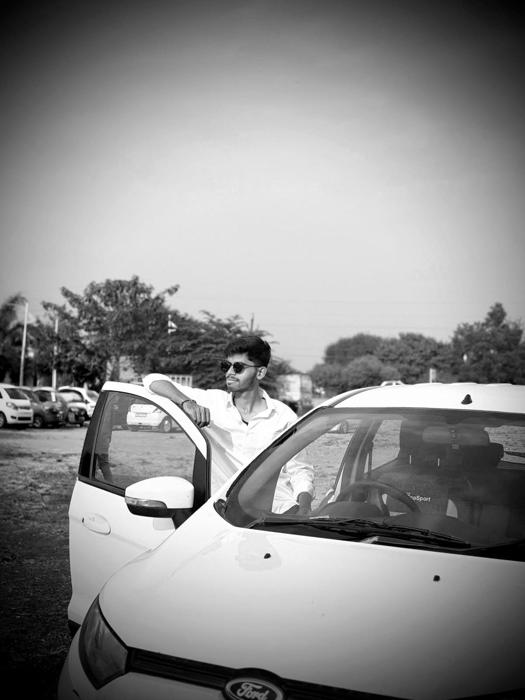

QR codes placed on plants across the campus reveal fascinating facts about each species now with AI-powered audio narrated by the plants themselves.
FloraScan is a digital initiative designed to transform the campus of Shri Shivaji College, Parbhani into an interactive botanical learning space.
QR codes are placed on 17 different plants across the campus. When scanned using a smartphone, these codes direct visitors to a website providing detailed information about each plant species including its scientific name, characteristics, ecological importance, and uses.
Each plant page also features an AI-generated audio voice where the plant narrates its own story, making learning truly immersive and unforgettable.
Discover the plants around your campus in three easy steps.
Walk around campus and spot any of the 17 plants tagged with a FloraScan QR code label.
Use your smartphone camera or any QR scanner app. No special app needed!
Get detailed plant info and press play to hear the plant narrate its own story in an AI voice!
Every plant in FloraScan has an AI-generated audio narration — voiced as if the plant itself is speaking directly to you, sharing its own history, characteristics, and ecological importance.
Instead of just reading facts, you can press play and listen to the Neem Tree tell you about its medicinal powers, or hear the Sandalwood Tree explain its cultural significance in a warm, natural human voice.
Each plant has its own AI-generated audio track
The plant speaks as itself personal and immersive
Instantly plays on any smartphone browser
Botanical facts, medicinal uses, ecological role
+ 13 more plant voice narrations on the website
FloraScan was built using a modern web development stack combining fast frontend frameworks, structured data management, AI voice synthesis, and cloud deployment to create a seamless experience for students.
Component-based UI architecture. All 17 plant pages are dynamically rendered from a single template using React Router.
Lightning-fast development server and build tool. Ensures the app loads quickly on mobile after scanning a QR code.
Utility-first CSS framework used to design a clean, consistent, and mobile-responsive UI across all plant pages.
All 17 plant profiles, sections, quizzes, and metadata are stored in a structured file easy to update and expand.
Industry leading AI voice synthesis used to generate all 17 plant audio narrations. Each plant speaks in its own unique, natural-sounding AI voice.
The entire application is deployed on Vercel for instant global CDN delivery, ensuring the website loads fast anywhere on campus.
Handles navigation between the home page and each individual plant detail page every QR code links directly to a unique plant route.
Provides a rich set of icons used across the plant info sections, navigation, and interactive UI elements.
Physical QR codes printed on labels and placed on real plants across campus. Scanning them opens the exact plant page instantly.
Identified campus plants, researched botanical data for each species, and designed the project structure and data format.
Built a comprehensive dataset for all 17 plants covering botanical classification, medicinal uses, ecological role, and student quick facts.
Developed the React app with Vite and Tailwind CSS. Built dynamic plant pages, navigation, interactive quizzes, and mobile-first responsive design.
Used ElevenLabs to generate 17 unique AI voice narrations each scripted as a first person story told by the plant itself.
Deployed the app on Vercel, generated unique QR codes for all 17 plants, printed them, and placed them on the actual campus plants.
Many plant species exist on college campuses, but most students are unaware of their scientific significance and ecological value. FloraScan bridges the gap between nature and technology, turning the campus into a living digital botanical library.
Encourages Environmental AwarenessStudents develop a deeper appreciation for the plant life surrounding them every day.
Promotes Interactive LearningAI audio + visual info makes botanical knowledge memorable and truly engaging.
Digitizes Campus BiodiversityCreates a permanent digital record of 17 campus species, accessible to anyone, anytime.
Technology Meets NatureDemonstrates how React, AI, and QR technology can solve real educational challenges.

Developed FloraScan as a final year academic project researching 17 campus plants, building the full React web app, generating AI audio with ElevenLabs, and deploying the complete system on Vercel.
Special thanks to those who made this project possible.
For his tremendous support, guidance, and encouragement throughout the development of this project.
For his valuable support and guidance in helping turn this idea into reality.
Curious to explore all 17 plant species with full details, quizzes, and AI audio narrations?
🌿 Visit the FloraScan Plant Database